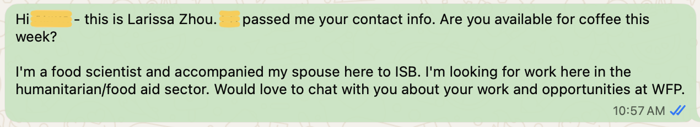
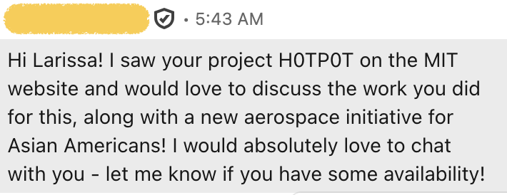
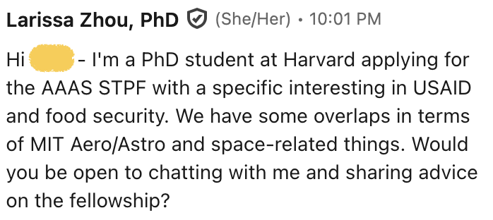

This is your starter pack for pivoting into the world of food and science. I've tried to distill down 15+ years of working in food science myself and also helping others navigate the same terrain, first as a young professional mentoring peers and other recent college grads, and now as a strategy coach guiding people through unconventional professional leaps.
This guide is for everyone who didn't study food science at university and want to work at the intersection of food and science. I used the strategies here to leverage an undergrad degree in physics into a job as the food science at Modernist Cuisine and later to get NASA to sponsor my research on cooking in space. You might be a recent CS grad like Zach. You might be about to finish a PhD in computational biology and are wondering how to apply your technical skills to food. You might have a satisfying career designing medical devices and want to switch to designing kitchen appliances. You can make a leap! This is how.
Learn what type of career you want
How do you find out whether a job in food science is for you? By answering the following 2 questions:
1. What do you actually want to do on a daily basis?
2. What do I want my output to be?
To answer the two questions above, run low-stakes micro-experiments to gather data.
Why low-stakes? Because most people find moving into a new industry intimidating and won’t try it if there is a lot to lose.
Why micro? Because you don’t actually know if the path you’re on is worth pursuing or worth pivoting from. Take small steps, get data, and then decide if you want to make bigger commitments.
The goal here is to develop the vague inkling of "I want to work with food" and turn it into a specific desire like "I want to work in formulation for alt-protein."
Below are 3 types of low-stakes micro-experiments.
Independent Research
Spend 30 minutes a day for the next two weeks researching the industry using the links below. Notice that I’m not recommending Eater, America’s Test Kitchen, or even Modernist Cuisine. You’re likely already a fan of those outfits. Instead, you need to read the unglamorous, unromantic behind-the-scenes reality of what it takes to make food.
For example, if you want to work at Beyond Meat, you cannot just be a fan of plant-based burgers; you have to care about things like fermentation tank capacity or scale-up logistics, because that's what you'll be thinking about most days. The resources below are for you to get a sense of the actual machinery of the industry. Read the headlines that naturally attract you, but also force yourself to read the boring stuff because you'll surely have to encounter some of it if you work in this industry. Then, ask yourself if you still want to get involved.
- Industry-insider newsletters:
- Podcasts: My Food Job Rocks - Listen to Adam Yee's interviews with all sorts of food people. Ask yourself, do I want to do what they're doing?
- Books:
- Hooked by Michael Moss - Important to understand how food science knowledge can be weaponized.
- Flavorama by Arielle Johnson
- Taste What You're Missing by Barb Stuckey
Informational Chats
Write to people and invite them for virtual or in-person coffee chats/walks. The goal is to get information that informs whether you want to keep pursuing the current path or to course correct.
- Who to contact, in order of priority:
- People who’re doing the exact job that you want to do
- People who are in the industry, maybe not in the exact niche that you want, but at least they’re likely to talk to you. This could be your friend’s sister’s climbing partner who you ran into at the gym once. Reach out to them.
- How to reach out: I say 1) who I am, 2) why I want to talk to the person, and then 3) ask if they want to talk. Below are some examples from my inbox. Note that email, LinkedIn, even WhatsApp can all work depending on how you get introduced to your target. Just be professional and clear. Make it easy for the person to say yes.
- What to say, once you're on the call:
- Thank you so much for taking the time to chat with me. I really appreciate your time. I am currently a [X], and I’m exploring working in the food industry. Can I ask you a bunch of questions?
- Questions that help you understand their day-to-day tasks:
- How did you end up doing this work?
- What’s a typical day like for you?
- What do you like the most about your job?
- What do you like the least? How do you deal with that?
- Where do you think your next job will be?
- Questions that trigger the other person to problem solve on your behalf:
- I’ve found that I really enjoy X. How much of X exists in your job?
- I have a background in Y and skills in A, B, and C. Given your experience, what orgs or positions do you think would be a good fit for me?
- I have a background in Y and skills in A, B, and C. If I wanted to work in your position, what skills or experience do I need that I currently don’t have? How can I get those skills?
- Is there anyone else in your network that you think would be helpful for me to talk to? If they suggest someone, then ask: would you be comfortable making an introduction?
- Are there other orgs that you think I should take a look at, given my background and interests? If they suggest something, do you know anyone there that might be willing to chat with me?



Attending Events
Great for meeting a lot of people all at once. You get a quick overview of entire ecosystems of companies and sectors and the dizzying variety of products that food scientists touch.
- Institute of Food Technologists: If you’re able to, go to the big annual one that usually takes place in Chicago. Or check out the gatherings organized by your local chapter, which are often more fruitful because they’re more intimate, less overwhelming, and you get a sense of the specific companies/sectors to your geographic region. For example, Chicago is a hub for consumer packaged goods. In Washington, California, and New York, there are a lot of beer and wine people.
- Research Chefs Association
- Future Food-Tech
By the end of this phase, you should have 1-3 niches within science x food that you want to further explore.
Get a foot in the door
After narrowing down your target niches, the next phase is tactical execution: repackaging your background and landing your first foot-in-the-door role. This is a two-step approach: first, constructing a bridge resume and a pivot pitch that translate your past skills; second, targeting the specific small outfits where you should go knocking.
Bridge Resume
Re-weave your past experiences into a bridge resume that makes you compelling to someone in the food industry. There can be some subtlety to this and quite a lot of complexity, but here are the two fundamental things you want to do when writing the bridge resume:
- Highlight food experience: Almost every resume defaults to a standard chronological "Work Experience" section. By changing that header to "Relevant Experience," you instantly change the rules of what is allowed on the page. Now, the filter opens up. You can seamlessly include unpaid food extracurriculars, side-hustles, or intense kitchen experiments right alongside your day jobs. This allows you to showcase a deep, proven history of execution and interest in food without letting a lack of a "proper" job title hold you back.
- Highlight transferable skills by finding the appropriate level of zoom: Advancing in an industry requires specialization and hyperspecificity ("I'm one of five people in my region who knows the ins and outs of [name an arcane tool/protocol/system]"). Changing industries requires you to zoom out. If you present a ground-level view of your past work, a hiring manager in a different field won't see how you fit. Instead, zoom out to an altitude where the transferable skills become obvious. Every time you draft a bullet point, test it with this question: "Am I zoomed in too far or too in for an outsider to understand me?"
I think a resume should be 1 page and comprehensible to a busy human. There are all sorts of tricks online for getting past resume screening algorithms. I don't think you should go for positions that are so large that the org uses ATS's. More on that later.
Ready to create your bridge resume?
Creating a good bridge resume actually takes some thought, and we're getting into an area where it can be helpful to have support. I've tried to make this guide as simple as possible, because I don't want the article to be a thousand pages. When I work with clients on this, we usually spend a couple weeks progressing through 4-5 drafts to make sure that this is really going to be effective. If you want to learn more about what working with me looks like, apply for a free Strategy Session.
Pivot Pitch
When you meet people at events, or when you're asked the classic interview warm-up question "So tell us about yourself?/Why do you want this job?," you need to tell a coherent 90-sec story that explains three things:
- Where you came from (background and skills, ie. your resume in 2 sentences)
- Why you left (intentional decision point)
- Why [X] specific destination is the logical next step (alignment)
The resume and the pivot pitch tag-team to present a coherent story. "Coherent" is key because humans crave coherence. Not only do you crave a coherent story for your pivot, a hiring manager also needs coherence. They need to be able to give their boss a coherent story of why they hired you. When you stay inside an industry, the coherence is readily granted ("She did [X] for the past 10 years, of course she's looking for another job in [X].") When you seek to switch industries, if you don't provide the narrative, people will readily invent one for you in an effort to make sense of what they're perceiving ("He is flaky, or she couldn't cut it in her old industry, or he's just bored.") Present your coherent narrative so that the hiring manager nods and says, "Of course this is your next step. It’s the only thing that makes sense."Land a short term work engagement (aka a small, non-glorious job)
With your Bridge Resume and 90-Second Pivot Pitch honed, deploy these two assets to land a small, non-glorious job.
Think of the food industry as a country like the US. If your dream is to end up in Seattle, Washington because you want to be close to the water, it’s awfully specific to try to get there in one go. Instead, you just need to cross the border into an adjacent state. Get a low-commitment, foot-in-the-door role that gets you inside the border.
Once inside, two things will happen:
Your visibility explodes. You get a much better sense of the landscape, the jobs that exist, and where the opportunities are.
You gain legitimacy. You are no longer an outsider trying to get in. You are an insider looking to make a successive jump.
Look for small businesses because:- Fewer gatekeepers: Small firms, if they're thriving, generally have more work than people. If you show up competent and proactive, they'll take your help. There are no automated HR software or complex multi-tiered interview process. You can often meet the founder or lab director at a meet-up, grab their email, and directly pitch them on an internship.
- You learn more: In a massive corporation, you might be trapped all summer testing the sodium levels of one cracker. In a 5-person office, you might be hired for one thing, but you are sitting three feet away from the founder who’s talking high level strategy and the R&D director who just came back from a plant visit. You get a fly-on-the-wall view of the entire business.
By this point, there are countless permutations of how you'll actually land the internship/contract/stage. I'm going to list 3 possible strategies:
Strategy 1: The Warm Loop-back
Look at the list of people you had coffee chats with and find the 2-3 companies that genuinely excited you. Maybe some of them even had encouraged you to stay in touch. Reach back out and update them on your new trajectory.Script: "Hi [X] - I've spent the last few weeks talking to lots of people in the field and learning about where I might be a good fit. I keep coming back to the work your team is doing. I'd like to give it a try. I've updated my resume to highlight relevants skills in that area. Do you have short-term contract needs or internship opportunities available? Feel free to connect me to another person on your team if that's best. Thanks so much, [Y]"
Strategy 2: "Leapfrog" Networking
If you realize that you really want to learn more about flavor science, look up all the flavor houses that exist and pick a few that you want to target. Never, ever only apply on the website. If you don't know anyone there, work your existing network until you get connected to someone there. Reach out to LinkedIn for contacts that are 1st or 2nd degree removed.Script: "Hi [X], I saw that you know [Y]. Would you be comfortable connecting me to [Y]? I'm really interested in working in flavor science and am interested in a job at [Y]'s company. I'd love to chat with them to see if it's a good fit. No pressure if it feels awkward. Just lmk."
Strategy 3: The Magical Thinking Elf Play
Do this every once in a while because what do you have to lose.
I’m referring to finding the 1 or 2 people/teams in the world that are doing exactly what you want and directly pitching them. It likely won’t work. But if you apply this strategy often enough, you’re bound to hit a home run once.
Don't wait around collecting certifications and bullet points and adjusting the margins on your resume hoping one day you'll be good enough. Perhaps you're good enough now. Let them tell you you're not.
If there’s a team you admire, stalk them and offer your services. They might just say yes, and you’ll have created a shortcut to doing the work you’ve always wanted to do.
Iterate and expand into a full career
Once your short-term assignment wraps up, you have crossed the border. You are no longer an outsider looking in; you have official industry experience on your resume and real data in your head.
Analyze the Data
Now, it’s time to take stock:
- What tasks gave you energy? (e.g., these are tasks that you can do for a long time and still want to do more of)
- What tasks drained you? (e.g., these are tasks that you'd prefer not to do, not even once)
- What hidden sectors did you discover? (e.g., these are the adjacent niches you didn't know existed six months ago)
Iterate
Take your learnings from the short term work experience and feed it back into Part 2 of the protocol:- Update the Resume: Your "Bridge Resume" is now an "Insider Resume." On top of your new experience, you now get to add a new chunk of concrete food-industry experiences.
- Refine the Pitch Pivot: Update your trajectory. It’s no longer about why you want to get into food; it’s about what specific problem you solved, what you learned, and where you want to take that expertise next.
- Make the Successive Jump: Map your next destination. You might realize you want to try a completely different aspect of the industry to see what else fits.
If you want help implementing what you learned in this guide, apply for a free Strategy Session.